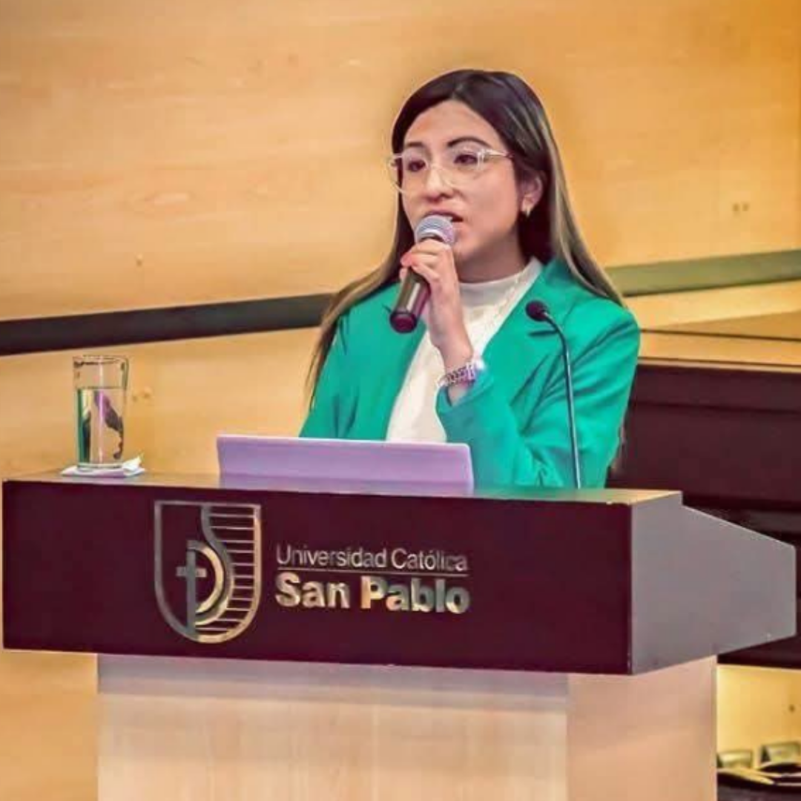
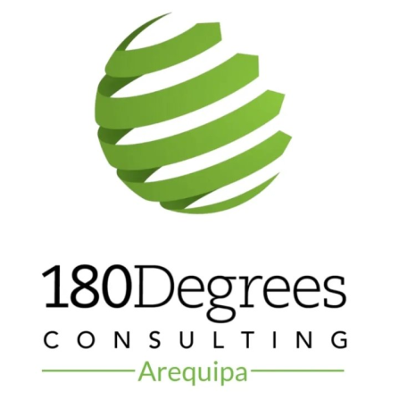
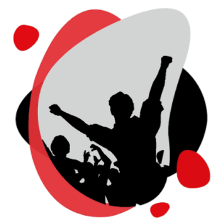

Plataforma Nacional de Juventudes · Arequipa
II Asamblea
de Juventudes
Tu participación transforma
- Sábado 28 de noviembre de 2026
- 9:00 a. m. – 1:00 p. m.
- Auditorio de Ing. Mecánica · UNSA
- Gratuito · con certificación
Ilustración original · equipo PNJ (SVG)
La asamblea
Lo que encontrarás
Una mañana para pasar de la opinión a la acción: diálogo sobre participación ciudadana, herramientas de empleabilidad y un concurso donde tus ideas se evalúan en serio.
-
Participación ciudadana
Paneles y diálogo sobre cómo incidir en las decisiones públicas: mecanismos de participación, veeduría y organización juvenil en Arequipa.
Ver ponentes -
Empleabilidad
Taller práctico de CV de alto impacto, LinkedIn y entrevistas, con la mentoría de 180 Degrees Consulting AQP para tu primer paso profesional.
Conoce la asamblea -
Concurso de ideas ciudadanas
Equipos de 2 a 4 personas proponen soluciones de participación ciudadana y las presentan ante un jurado en pitches de 5 minutos.
Conoce el concurso
- Participación digital
- Veeduría ciudadana
- Voluntariado
- Primer empleo
- Habilidades blandas
- Redes de juventud
II Asamblea de Juventudes · Arequipa
Ponentes y Jurados
Conoce a las personas ponentes, jurados y al asesor de proyectos de la asamblea.
-

PonenteMaría de Carmen Chambi Quispe
Coordinadora del Programa de Juventudes y Voluntariado del Gobierno Regional de Arequipa
-
 Ponente
PonenteCarlos Saravia Patana
Fundador de la Firma Legal "Saravia Estudio Juridico"
-
Fotografía pendientePonente
Nombre del ponente
Descripción técnica de la experiencia y especialidad por agregar.
-
Fotografía pendienteJurado
Nombre del jurado
Descripción técnica de la trayectoria y criterio de evaluación por agregar.
-
Fotografía pendientePonente
Nombre del ponente
Descripción técnica de la experiencia y especialidad por agregar.
-
Fotografía pendienteJurado
Nombre del jurado
Descripción técnica de la trayectoria y criterio de evaluación por agregar.
-
Asesor de Proyectos
Alex Martín Gonzales Anampa
Exgerente General del Gobierno Regional de Cajamarca y exgerente regional de Desarrollo Social.
Bases preliminares · sujetas a confirmación
Concurso de Participación Ciudadana
Ideas que transforman Arequipa. Un espacio para que equipos de jóvenes y público general diseñen propuestas reales de participación ciudadana y las defiendan ante un jurado. No necesitas experiencia previa: necesitas una idea y ganas de incidir.
Tres caminos
Elige tu categoría
Incidencia digital
Herramientas y canales digitales para informar, organizar y movilizar a la ciudadanía.
Veeduría y transparencia
Control ciudadano de obras, servicios y decisiones públicas en Arequipa.
Comunidad y voluntariado
Organización barrial y acción colectiva para resolver problemas del entorno.
Cómo funciona
De la idea al pitch
Arma tu equipo
De 2 a 4 personas, con ganas de proponer.
Elige categoría y diseña
Una propuesta concreta para una de las tres categorías.
Inscríbete
Registra tu equipo desde la sección de inscripciones.
Presenta tu pitch
5 minutos ante el jurado, el 28 de noviembre a las 12:00.
Evaluación
Qué mira el jurado
- Impacto ciudadano35%
¿A cuántas personas beneficia y qué cambia en su vida pública?
- Viabilidad25%
¿Puede ejecutarse con recursos realistas en Arequipa?
- Innovación20%
¿Propone un enfoque nuevo o una mejora significativa?
- Presentación20%
Claridad del pitch y solidez del equipo.
Reconocimientos
Lo que se llevan
- Certificado de reconocimiento de la Plataforma Nacional de Juventudes para los equipos finalistas.
- Mentoría de 180 Degrees Consulting AQP para desarrollar la propuesta ganadora.
- Difusión de la propuesta en los canales de la Plataforma y sus aliados.
Fechas clave
Cronograma
- Hasta el 26 novInscripción de equipos
- 28 nov · 12:00Pitches ante el jurado
- 28 nov · 12:40Resultados y premiación
El equipo
Quiénes hacen la asamblea
Una alianza entre la Plataforma Nacional de Juventudes y colectivos arequipeños que trabajan por la participación y el desarrollo juvenil.
-
Organiza
Plataforma Nacional de Juventudes
Red nacional que impulsa la participación, la incidencia y el liderazgo juvenil en el Perú.
-

Coorganiza180 Degrees Consulting AQP
Consultoría social universitaria: estrategia y mentoría para organizaciones de impacto.
-

CoorganizaJóvenes en Acción Arequipa
Colectivo juvenil arequipeño de voluntariado y acción comunitaria.
Comité organizador · Arequipa
Las personas detrás
Lorena Reyes
Coordinadora Regional
Plataforma Nacional de Juventudes
Annie Condori
Subcoordinadora
Plataforma Nacional de Juventudes
Santiago Lope
Coordinador de Logística
Plataforma Nacional de Juventudes
Registro gratuito · cupos limitados
Inscríbete a la asamblea
Un solo formulario, cinco minutos y tu lugar asegurado para el sábado 28 de noviembre. La certificación se emite según tu asistencia registrada.
Cómo inscribirte
Completa el formulario oficial
Te toma unos 5 minutos. Es el único registro del evento.
Guarda tu confirmación
Conserva el correo o captura de confirmación del formulario.
Acredítate y participa
El 28 de noviembre desde las 9:00 a. m. Tu asistencia registrada habilita el certificado.
Qué incluye
- Certificado oficial emitido por la Plataforma Nacional de Juventudes.
- Taller de empleabilidad con 180 Degrees Consulting AQP.
- Networking con organizaciones juveniles de Arequipa.
- Acceso al Concurso de Participación Ciudadana.
Requisitos
- Inscripción previa por el formulario oficial (gratuita).
- Documento de identidad para la acreditación.
- Puntualidad: acreditación desde las 9:00 a. m. Cupos limitados al aforo del auditorio.
Tu entrada a la asamblea
Cuenta regresiva
28 de noviembre · 9:00 a. m.
Crea tu pase personalizado
Agrega tu nombre y, si quieres, una foto. La imagen se genera en tu dispositivo; no se sube a ningún servidor.
JPG, PNG o WebP; máximo 5 MB.
Imagen cuadrada 1:1, ideal para redes. Es un recuerdo personalizado; no reemplaza la inscripción ni la confirmación oficial.
Únete al grupo de WhatsApp
Al inscribirte aceptas el aviso de privacidad. Sede: Auditorio de Ingeniería Mecánica, UNSA, Arequipa. Cómo llegar (se abre en una pestaña nueva).
Resolvemos tus dudas
Preguntas frecuentes
¿Tiene costo participar?
No. El ingreso a la II Asamblea de Juventudes es gratuito, y la certificación emitida por la Plataforma Nacional de Juventudes tampoco tiene costo.
¿Quién puede asistir?
Público en general: juventudes y cualquier persona interesada en participación ciudadana y empleabilidad. Los cupos son limitados al aforo del auditorio.
¿Cómo me inscribo?
Desde la sección de Inscripciones, mediante el formulario oficial. El registro previo es necesario para la acreditación y el certificado.
¿Cómo obtengo mi certificado?
Tu asistencia se registra en la acreditación. La Plataforma Nacional de Juventudes emite los certificados según ese registro; los detalles se indican en la clausura.
¿Cómo funciona el concurso?
En equipos de 2 a 4 personas preparan una propuesta de participación ciudadana y la presentan en un pitch de 5 minutos ante el jurado. Las bases preliminares están en la sección del Concurso.
¿Dónde es y qué debo llevar?
En el Auditorio de Ingeniería Mecánica de la UNSA, Arequipa, de forma presencial. Lleva tu documento de identidad para la acreditación y llega desde las 9:00 a. m.
Arequipa te espera
Tu participación transforma
Sábado 28 de noviembre de 2026 · 9:00 a. m. – 1:00 p. m. · Auditorio de Ingeniería Mecánica, UNSA. Ingreso gratuito con certificación de la Plataforma Nacional de Juventudes.
Datos personales
Aviso de privacidad
Responsable
Plataforma Nacional de Juventudes, con el apoyo de 180 Degrees Consulting AQP y Jóvenes en Acción Arequipa. El tratamiento se rige por la Ley N.° 29733, Ley de Protección de Datos Personales, y su reglamento.
Finalidad
Gestionar tu inscripción y asistencia, emitir la certificación y enviarte comunicaciones del evento. No se recogen datos sensibles.
Datos que recogemos
A través del formulario oficial (Google Forms): nombre completo, correo electrónico, número de celular y, de forma opcional, institución o carrera.
Almacenamiento
Las respuestas se guardan en Google Sheets (Google LLC), cuyos servidores pueden estar fuera del Perú. No cedemos tus datos a terceros con fines propios de estos.
Conservación y derechos ARCO
Plazo por definir en la versión final. Puedes ejercer acceso, rectificación, cancelación y oposición por los canales oficiales de la Plataforma, que se publicarán en la versión final.
Menores de edad
Si eres menor de edad, se recomienda inscribirte con conocimiento y autorización de tu padre, madre o apoderado. Este punto será precisado en la revisión legal.